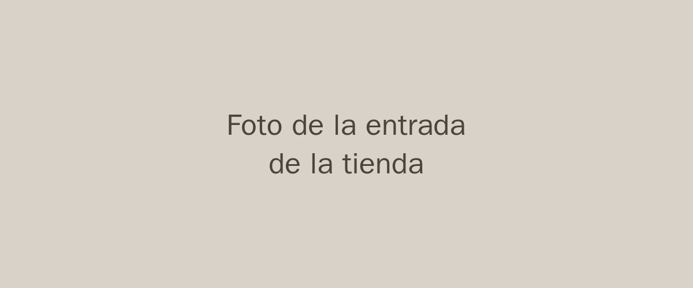

Nuestra Historia
Historia de cómo se creó PAWPrint: una librería fundada en 2011 con el sueño de convertirse en un punto de encuentro para los amantes de la lectura en Mercedes.

Un proyecto familiar nacido de la pasión compartida por los libros y la comunidad.
Historia de cómo se creó PAWPrint: una librería fundada en 2011 con el sueño de convertirse en un punto de encuentro para los amantes de la lectura en Mercedes.
Reuniones mensuales de debate literario moderadas por escritores invitados.
Clases formativas y prácticas de redacción creativa para todas las edades.
Tardes de cuentacuentos y manualidades para fomentar el amor lector desde la infancia.
Visitanos
Indicaciones de referencia: a media cuadra de la plaza central de Mercedes.